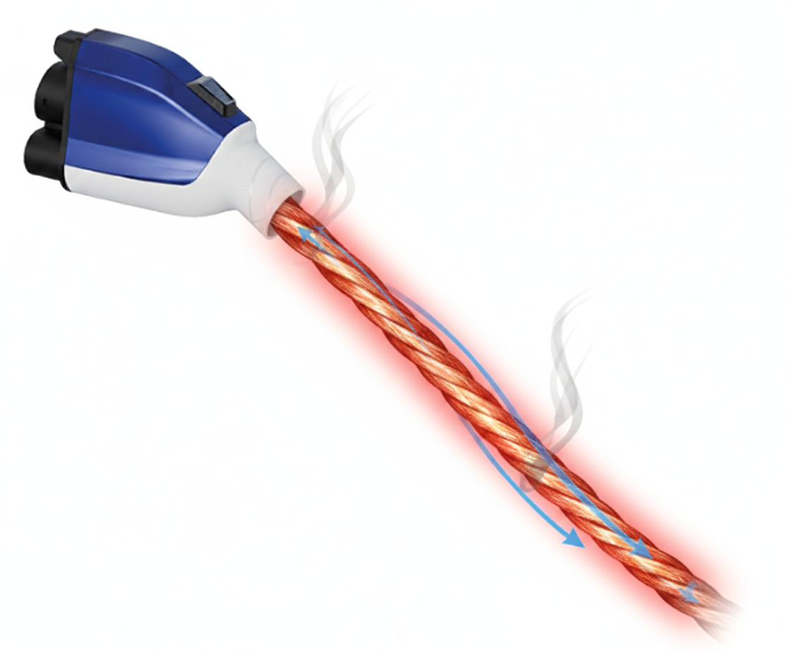
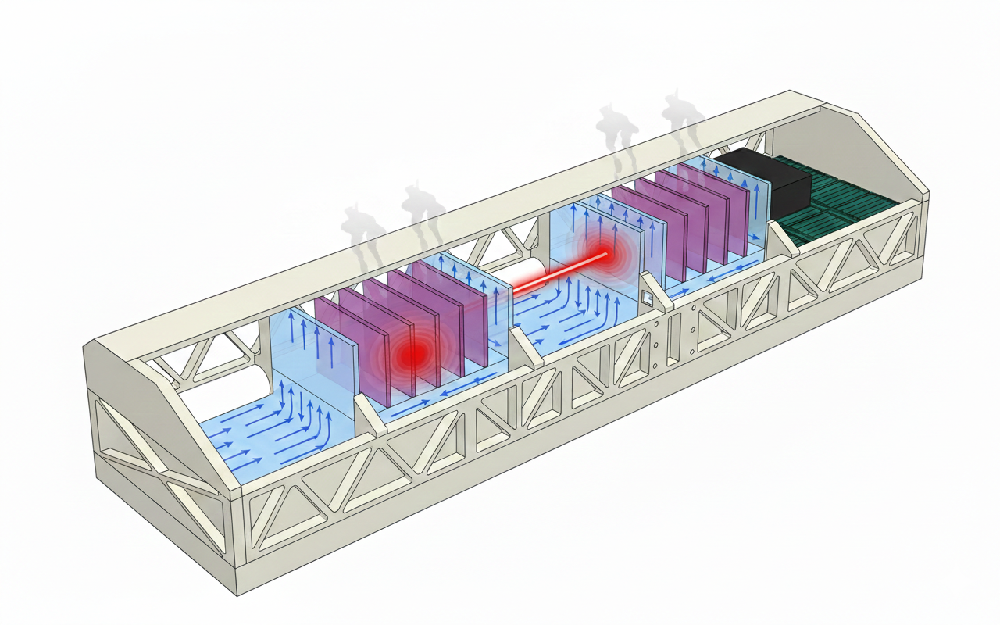

Selected Projects
실증 실험 및 M&S를 통해 수행한 주요 열관리 연구 프로젝트입니다.

[한국전력] 절연유체를 활용한 EV 초급속 충전 도선 액침 열관리
- • 액체-증기 상변화 냉각 시 케이블 온도 및 임계열유속 한계 규명
- • 액체-증기 상변화 냉각 시 압력강하 및 불안정(진동) 유동 안정화 규명

[국방과학연구소] 고출력 멀티 슬랩 액침 고체 레이저 열관리
- • 대류 냉각 시 고체 슬랩 및 냉각수의 온도 예측 및 설계
- • 냉각 모듈 유량 분배 및 냉각액 순환회로 압력강하 예측 및 설계
- • 열응력에 의한 슬랩의 구조적 파손 가능성 예측 및 설계